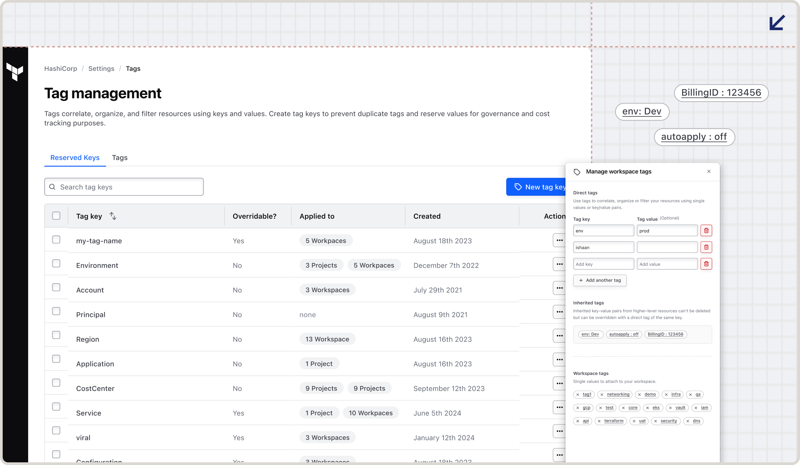
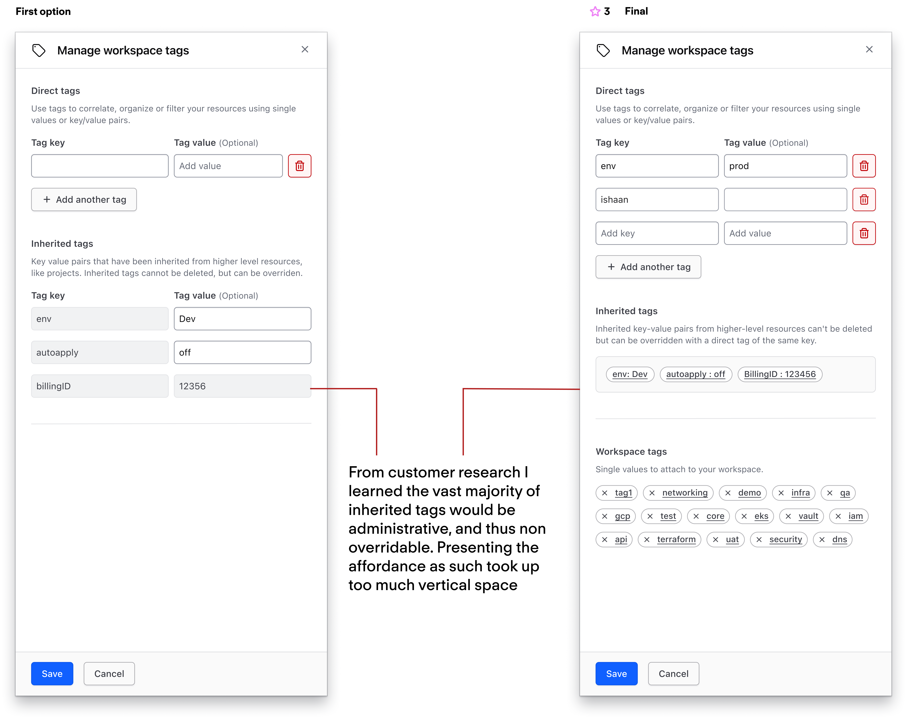
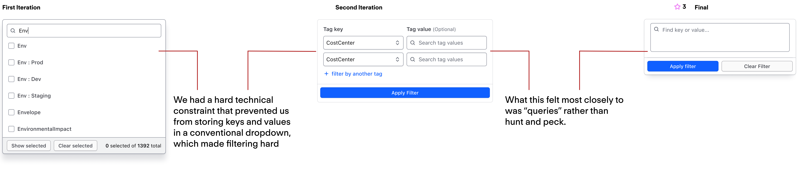
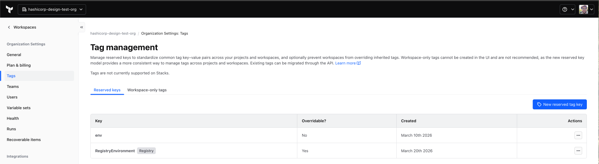

Ishaan Bose
Ishaan Bose
Enter the password to access


Terraform Cloud supports “Tags” both in the product and as an object in the Terraform configuration's cloud block. Tags were introduced to help users organize, correlate, and filter Workspaces, the core resource in Terraform Cloud. But single-value tags only go so far. They work for basic filtering, which app developers appreciate, but they don't meet the needs of platform engineers managing infrastructure at scale.
Phase one
Phase two
Phase three
Phase four
User has defined multiple resources and needs a way to organize it
User finds workspace tags, but cannot tag projects
User creates workspace tags for every project, and reuses them in every workspace within project
User has to recreate multiple tags of the same type to be able to filter effectively
"We are power users of Terraform Cloud and have thousands of resources on the platform"
"I need to be able to organize my resources using metadata labels, or tags at a project level"
"Some of the tags that I use don't match the standard that we use at a cloud provider level, and I don't want them fundamentally changeable"
"I need a certain set of tags on each new workspace thats created."
Tags generally fall into two categories: user-defined (added by app developers) and administrative (added by platform engineers). Administrative tags often use key-value pairs to organize resources more effectively. However, Terraform Cloud didn’t natively support key-value tagging, leading users to hack around it by embedding delimiters like ":" or "=" in single-value tags. In fact, 36% of all tags contained such delimiters, highlighting the clear need for proper support.
Commonly used tags
Arbitrary tags (often single value)
Administrative tags (often k/v)
We knew there was demand and that users were hacking around the current implementation. What we didn’t know was how they set up tags inside their organizations.
My PM and I talked to 4 customers who’d asked for this, focused on the platform engineer persona the current model served least.
Tags as a concept is ineffective in allowing customers to perform more administrative tasks, such as managing billing, audit, and RBAC. The current implementation is too permissive, meaning anyone can add or remove tags, and a tag itself cannot be added at a project level. This causes the customer to have to more manual busy work on their end to maintain a system of record of internal metadata to keep up.
With administrative tags, customers should in theory be able to consume their contract entitlements with greater confidence.
Feature adoption
General goal
Contract consumption
Long-term goal
Workspace tag usage
Migration indicator
Challenge: We need to provide the affordance of both predefined tags, and arbitrary tagging.
Decision: Use fields with smart suggestions, as testing showed that power-select component biased users towards pre-existing tags.


Challenge: We do not want to overtly bias users towards overriding tags, but also do not want to not present the affordance of overridability.
Decision: Visually separate inherited tags, but shorten view through grid of tags, as there tends to be many inherited tag per project, and often non-overridable.


Challenge: We did not store the key and value of all tags in a user's organization, which made traditional tag filtering patterns unusable (dropdowns).
Decision: The metaphor that matched the most was akin to a query, so the design reflected that. A user would search for a tag and then a list of resources that match that tag would return.


Challenge: We could not fully deprecate old workspace tags without breaking compatibility guarantees, but having two "tags" with different names felt like we were offloading the complexity of our internal implementation to the user.
Decision: Soft deprecate tag type by removing action through UI, ensuring higher adoption of new tag type.


Additionally, design patterns have been adopted by other HashiCorp platform design team, and used in 4 new products.
Feature adoption
Customers onboarded
Old workspace tags
Adding tags sounds straightforward, but it became a months-long effort. Tagging had to work across every HashiCorp Cloud product, not just Terraform, which meant complex cross-team alignment. That delayed timelines and cut scope, but produced a stronger solution. The biggest skill I built was navigating the tensions of an EPD structure. The project was at risk, and cutting corners was tempting, but I learned to choose my battles and balance advocacy for the experience against pragmatic delivery.